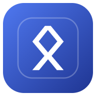

Şifrelerin, notların, görevlerin ve projelerin tek yerde — uçtan uca şifreli.
Bitig'in bir sunucusu yok. Kasan kendi cihazlarında ve istersen kendi Dropbox ya da OneDrive hesabında, ana şifrenle şifrelenmiş olarak durur. Kimse — biz dahil — içini göremez.